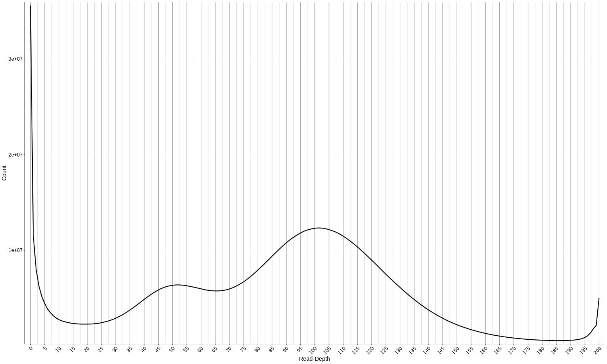
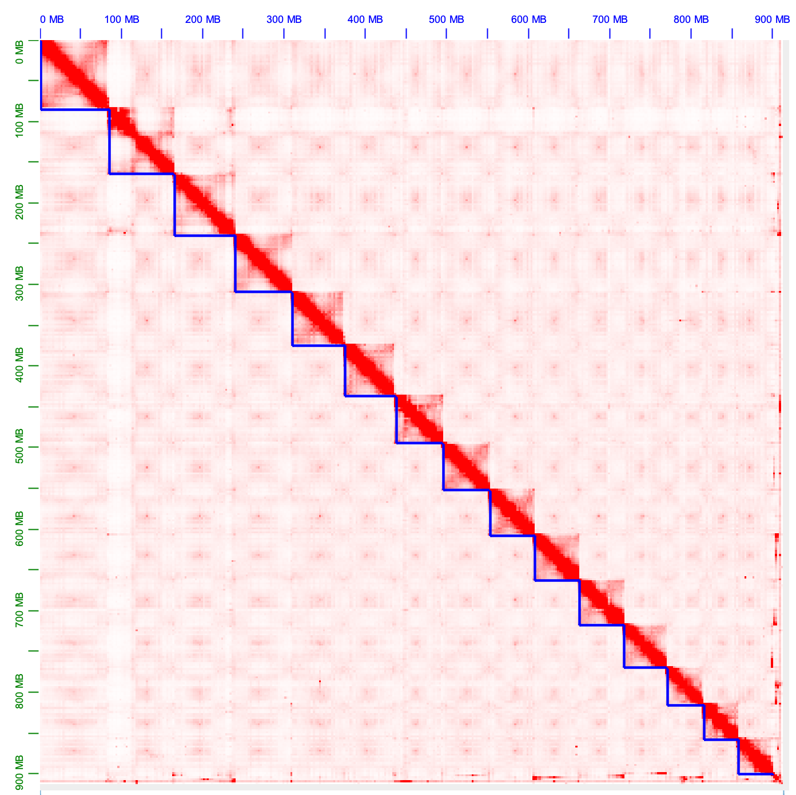

AEP Genome Assembly
This document describes the assembly process for the strain AEP H. vulgaris genome. Our approach was as follows: we generated an initial draft assembly with Canu using Nanopore reads, we then polished the draft with Pilon using 10x linked reads, mis-assemblies were identified and broken with Tigmint using 10x data, uncollapsed haplotigs were merged with purge_haplotigs based on 10X read depth distribution, de-duplicated contigs were scaffolded with ARCS using 10X data, gaps introduced by ARCS were filled with PBJelly using Nanopore and PacBio reads, pseudo-chromosome scaffolds were assembled with the Juicer and 3d-dna pipelines using Hi-C data, the new gaps created by the Hi-C scaffolding were filled with PBJelly using PacBio and Nanopore data, and finally the genome was polished with Pilon using 10x, PacBio, and Nanopore data.
AEP Genome AssemblyDe-Novo Strain AEP H. vulgaris Genome Assembly Resulting Genome StatsPolishing the Initial Draft Assembly with PilonMapping 10X Data to the Canu Draft GenomePrepping Canu Draft for Pilon RunRunning PilonResulting Genome StatsBreaking Mis-Assemblies with TigMintPrepping 10X Fastq Files with LongrangerRunning TigMintResulting Genome StatsCollapsing Haplotigs with Purge_HaplotigsIdentifying Uncollapsed Haplotigs Using 10X DataCollapsing HaplotigsResulting Genome StatsScaffolding Contigs with 10X DataMapping 10X Data to the Haplotig-Purged GenomeRunning ArcsResulting Genome StatsFilling Gaps with PBJellyCorrecting Long Reads Using CanuCorrecting PacBio ReadsCorrecting Nanopore ReadsFilling Gaps with PBJellyResulting Genome StatsScaffolding Using Hi-C DataMapping Hi-C Reads Using JuicerScaffolding using 3d-dnaResulting Genome StatsFilling Pseudo-Chromosome Scaffold Gaps with PBJellyResulting Genome StatsFinal Polish Using PilonMapping the 10X, Nanopore, and PacBio ReadsPolishing Pseudo-Chromosomes w/ PilonFinal Assembly StatsFiles Associated with This Document
De-Novo Strain AEP H. vulgaris Genome Assembly
To generate the initial draft genome, we used Canu (v2.0) to assemble a de novo assembly from our Nanopore sequencing data:
(00_canuAssembly/runCanu.sh)
xxxxxxxxxx
canu -d aep_canu -p aep_canu1 genomeSize=1g ovlMerDistinct=0.975 useGrid=remote -nanopore-rawNanopore/PROM_021_Juliano_Siebert_Hydra_HCL2_50K_01_11_2019/*.gzThe resulting fasta file hydra_aep.canu.contigs.fasta was used as the starting point for the rest of the genome assembly process.
Resulting Genome Stats
Assembly size statistics were generated using assembly-stats (github.com/sanger-pathogens/assembly-stats)
(stats for 00_canuAssembly/hydra_aep.canu.contigs.fasta)
xxxxxxxxxxsum = 1047612583, n = 2624, ave = 399242.60, largest = 14388250N50 = 2616727, n = 100N60 = 1604856, n = 153N70 = 894765, n = 243N80 = 422017, n = 409N90 = 127714, n = 875N100 = 1003, n = 2624N_count = 0Gaps = 0
Polishing the Initial Draft Assembly with Pilon
While the Nanopore reads used to generate the Canu draft assembly are quite long, they are also error prone. In this step, we try to fix some of those errors using our 10X data, which was sequenced on a conventional Illumina sequencer and has much more accurate base calls.
Mapping 10X Data to the Canu Draft Genome
Pilon requires as input a bam file of reads aligned to the genome. We used the longranger pipeline (v2.2.2) to map our 10X reads. First, we prepped the Canu draft genome for mapping:
(01_initialPilon/makeCanuRef.sh)
xxxxxxxxxx#SBATCH -p bigmemm#SBATCH --job-name=lRanger#SBATCH -c 4#SBATCH -t 60-0#SBATCH --mem=16G#SBATCH --error=lRanger_mkref_%j.err#SBATCH --output=lRanger_mkref_%j.out
../../longranger-2.2.2/longranger mkref hydra_aep.canu.contigs.fastaThen we mapped the 10X fastq files:
(01_initialPilon/runLrAlign.sh)
xxxxxxxxxx#SBATCH -p bigmemh#SBATCH --job-name=lRanger#SBATCH -c 32#SBATCH -t 60-0#SBATCH --mem=300G#SBATCH --error=lRanger_align.err#SBATCH --output=lRanger_align.out
../resources/longranger-2.2.2/longranger align \ --id=Canu10xMap \ --fastqs=../resources/reads/10x/ \ --sample=Hydra \ --localcores=32 \ --localmem=300 \ --reference=../resources/references/canuDraft/refdata-hydra_aep.canu.contigsThis generated the file possorted_bam.bam that we used for the Pilon polishing.
Prepping Canu Draft for Pilon Run
We next polished the genomic using Pilon (v.1.23). Because Pilon has high memory requirements, we had to split the draft genome into ~50 Mb chunks to reduce memory overhead. First we determined contig lengths:
xxxxxxxxxxsamtools faidx hydra_aep.canu.contigs.fasta cut -f 1,2 hydra_aep.canu.contigs.fasta.fai > contLengths.txtThen we used the following R script to split the genome fasta into ~50 Mb chunks
(01_initialPilon/makeContigGroups.r)
xxxxxxxxxxscaffs <- read.table("contLengths.txt", stringsAsFactors = F)
#sort contigs from largest to smallestscaffs <- scaffs[order(-scaffs$V2),]
#initialize vector to accumulate contigs until they encompass 50 Mb#(holds, chunk in progress)scaffV <- c()#initialize list for 50 Mb chunksscaffL <- c()
#initialize running length countertotalSeq <- 0for(i in 1:nrow(scaffs)){ #if the scaffold is bigger than 50 Mb it gets to be in it's own chunk if (scaffs[i,2] >= 50000000) { scaffL <- c(scaffL, scaffs[i,1]) #if our running length counter hasn't gotten to 50 Mb and we aren't #out of contigs, add the contig to our chunk in progress } else if (totalSeq + scaffs[i,2] < 50000000 & i != nrow(scaffs)) { totalSeq <- totalSeq + scaffs[i,2] scaffV <- c(scaffV, scaffs[i,1]) #if we're at the end of the contig, finalize the last working chunk #and add it to our chunk list } else if (i == nrow(scaffs)) { scaffV <- c(scaffV, scaffs[i,1]) scaffL <- c(scaffL, paste(scaffV, collapse = " ")) #if none of the above conditions have been met, our chunk in #progress has exceeded 50 MB. Finalize chunk in progress and #add it to our list. } else { totalSeq <- scaffs[i,2] scaffL <- c(scaffL, paste(scaffV, collapse = " ")) scaffV <- c(scaffs[i,1]) }}
write.table(scaffL, file = "contGroups.txt", quote = F, sep = " ", row.names = F, col.names = F)Running Pilon
The following script looped through the contig chunk list generated above, extracted the corresponding sequences, and ran Pilon on just that subset of subsequences.
(01_initialPilon/runPilon.sh)
xxxxxxxxxx#SBATCH -p bigmemh#SBATCH --job-name=Pilon#SBATCH -c 60#SBATCH -t 60-0#SBATCH --mem=350G#SBATCH --error=pilon_%j.err#SBATCH --output=pilon_%j.out
module load pilon
COUNTER=0
while read p; do echo "$p"
let COUNTER=COUNTER+1
echo "$COUNTER"
samtools faidx ../resources/references/canuDraft/hydra_aep.canu.contigs.fasta $p > subGenome.fa
java -Xmx300G -jar /share/apps/pilon-1.23/pilon-1.23.jar \ --genome subGenome.fa --bam possorted_bam.bam \ --output $COUNTER --outdir pilOut --threads 60
done < resources/references/canuDraft/contGroups.txt
rm subGenome.faFor some reason (I think because the contGroups.txt didn't end with an empty line), the script missed the last chunk of contigs, so this script caught that last chunk of the genome:
(01_initialPilon/runPilonLastOne.sh)
xxxxxxxxxx#SBATCH -p bigmemh#SBATCH --job-name=Pilon#SBATCH -c 60#SBATCH -t 60-0#SBATCH --mem=350G#SBATCH --error=pilon_%j.err#SBATCH --output=pilon_%j.out
module load pilon
COUNTER=22
conts=$(head -n 22 ../resources/references/canuDraft/contGroups.txt | tail -n 1)
cut -d " " -f 1 "$conts"
samtools faidx ../resources/references/canuDraft/hydra_aep.canu.contigs.fasta $conts > subGenome.fa
java -Xmx300G -jar /share/apps/pilon-1.23/pilon-1.23.jar \ --genome subGenome.fa --bam possorted_bam.bam \ --output $COUNTER --outdir pilOut --threads 60
rm subGenome.faWe then combined the output files into a new, polished draft genome
cat pilOut/*fasta > canuPilon.fasta
Resulting Genome Stats
(stats for 01_initialPilon/canuPilon.fasta)
xxxxxxxxxxsum = 1064563770, n = 2624, ave = 405702.66, largest = 14626543N50 = 2659828, n = 100N60 = 1631039, n = 153N70 = 911864, n = 242N80 = 429739, n = 409N90 = 130666, n = 873N100 = 1003, n = 2624N_count = 0Gaps = 0Breaking Mis-Assemblies with TigMint
Next, we wanted to cross-reference our Canu draft with our 10X reads to try and identify possible mis-assemblies. We did this using TigMint (v1.1.2).
Prepping 10X Fastq Files with Longranger
Although the TigMint pipeline handles the actual mapping of the data, it requires that the raw 10X data go through some initial processing by longranger:
(01_initialPilon/runLrBasic.sh)
xxxxxxxxxx#SBATCH -p bigmemh#SBATCH --job-name=lRangerB#SBATCH -c 60#SBATCH -t 60-0#SBATCH --mem=350G#SBATCH --error=lRanger_basic_%j.err#SBATCH --output=lRanger_basic_%j.out
../resources/longranger-2.2.2/longranger basic \ --id=aep10x_b \ --fastqs=../resources/reads/10x/ \ --sample=Hydra \ --localcores=60 \ --localmem=350The resulting processed fastq file (barcoded.fastq.gz) was unzipped and renamed to reads.fastq
Running TigMint
TigMint is executed using a makefile that's included when the software is installed. We slightly modified the config section of this make file (lines 1 to 58) and renamed the file from tigmint-make to tigmint-make-mod
(02_tigmint/tigmint-make-mod)
xxxxxxxxxx# Correct misassemblies using Tigmint# Written by Shaun Jackman @sjackman# Contributions by Lauren Coombe
# Usage:# tigmint-make draft=myassembly reads=myreads
# To run Tigmint and calculate assembly metrics:# tigmint-make draft=myassembly reads=myreads ref=GRCh38 G=3088269832
# Name of the draft assembly, draft.fadraft=draft
# Name of the reads, reads.fq.gz, after running longranger basicreads=reads
# Reference genome, ref.fa, for calculating assembly contiguity metrics#ref=ref
# Size of the reference genome, for calculating NG50 and NGA50#G=0
# Minimum molecule sizeminsize=2000
# Minimum AS/Read length ratioas=0.65
# Maximum number of mismatchesnm=5
# Maximum distance between reads to be considered the same moleculedist=100000
# Mapping quality thresholdmapq=1
# Bp of contigs to trim after cutting at errortrim=0
#Threshold for number of spanning molecules to consider properly assembledspan=20
#Window size for checking for spanning moleculeswindow=1000
# Parameters of ARCSc=5e=30000r=0.05
# Parameters of LINKSa=0.1l=10
# Number of threadst=58Prior to running TigMint, we set aside any contigs smaller than 2 Kb, which TigMint would ignore anyway
xxxxxxxxxxmv canuPilon.fasta draft.full.faseqkit seq -m 2000 > draft.faseqkit seq -M 2000 > draft.small.faWe then executed the TigMint pipeline on only the > 2 Kb contigs using the following script (bwa version used: v0.7.9a)
(02_tigmint/runTigmintMake.sh)
xxxxxxxxxx#SBATCH -p bigmemh#SBATCH --job-name=tig#SBATCH -c 60#SBATCH -t 60-0#SBATCH --mem=200G#SBATCH --error=tigmint_%j.err#SBATCH --output=tigmint_%j.out
source ../resources/venv/bin/activate
module load bwa
../resources/tigmint/bin/tigmint-make-mod tigmint draft=draft reads=readsWe then brought the small contigs back in
cat draft.tigmint.fa draft.small.fa > draft.tigmint.full.fa
Finally, we renamed the contigs to have simpler headers:
bioawk -c fastx '{ print ">scaffold-" ++i"\n"$seq }' < draft.tigmint.full.fa > draft.tigmint.final.fa
Resulting Genome Stats
(stats for 02_tigmint/tigmint.fa)
xxxxxxxxxxsum = 1064563770, n = 2838, ave = 375110.56, largest = 14626543N50 = 2379922, n = 106N60 = 1590296, n = 162N70 = 898475, n = 254N80 = 413015, n = 428N90 = 128223, n = 904N100 = 66, n = 2838N_count = 0Gaps = 0Collapsing Haplotigs with Purge_Haplotigs
In some cases, the two copies of a particular locus in a genome will be different enough in sequence composition that they will be treated as two distinct sequences by the genome assembler. For this assembly, we want to generate a haploid genome without alternative alleles. Also, some of our downstream assembly steps assume a haploid input, so if we don't address this issue it could cause mis-assemblies.
Identifying Uncollapsed Haplotigs Using 10X Data
To identify uncollapsed haplotigs in our TigMint-processed assembly, we mapped our 10X data to our draft genome and looked at the read depth distribution
To do this, we first had to prep the TigMint-processed reference genome for mapping:
(03_purgeHaplotigs/makeTigmintRef.sh)
xxxxxxxxxx#SBATCH -p bigmemm#SBATCH --job-name=lRanger#SBATCH -c 4#SBATCH -t 60-0#SBATCH --mem=16G#SBATCH --error=lRanger_mkref_%j.err#SBATCH --output=lRanger_mkref_%j.out
../../longranger-2.2.2/longranger mkref tigmint.faWe then used the longranger pipeline to map the 10X data to the TigMint-processed genome
(03_purgeHaplotigs/runLrAlign.sh)
xxxxxxxxxx#SBATCH -p bigmemh#SBATCH --job-name=lRanger#SBATCH -c 32#SBATCH -t 60-0#SBATCH --mem=300G#SBATCH --error=lRanger_align.err#SBATCH --output=lRanger_align.out
../resources/longranger-2.2.2/longranger align \ --id=tig10xMap \ --fastqs=../resources/reads/10x/ \ --sample=Hydra \ --localcores=32 \ --localmem=300 \ --reference=../resources/references/canPilTig/refdata-tigmintThe resulting bam file (possorted_bam.bam) was renamed to posSort.10x.bam
We then generated a distribution plot of read depth across the contigs in our assembly using a function provided by the Purge_Haplotigs package (v1.1.1)
(03_purgeHaplotigs/runMakePlot.sh)
xxxxxxxxxx#SBATCH -p med#SBATCH --job-name=mh#SBATCH -c 24#SBATCH -t 60-0#SBATCH --mem=0#SBATCH --error=mh.err#SBATCH --output=mh.out
purge_haplotigs readhist -b posSort.10x.bam -g ../resources/references/canPilTig/tigmint.fa -t 24
The bimodal distribution in read depth clearly indicated that we had uncollapsed heterozygosity in the assembly.
Collapsing Haplotigs
We used the purge_haplotigs pipeline to remove this uncollapsed heterozygosity. We used the distribution plot to specify the bounds of the two populations: the population with half read density (depth from 17 to 67) and the population with full read density (depth from 67 to 185).
(03_purgeHaplotigs/runPurge.sh)
xxxxxxxxxx#SBATCH -p med#SBATCH --job-name=purge#SBATCH -c 24#SBATCH -t 60-0#SBATCH --mem=0#SBATCH --error=purge.err#SBATCH --output=purge.out
purge_haplotigs contigcov -i posSort.10x.bam.gencov -l 17 -m 67 -h 185
purge_haplotigs purge -d -g ../resources/references/canPilTig/tigmint.fa -c coverage_stats.csv -t 24 -b posSort.10x.bamFollowing the removal of haplotigs, the fasta file curated.fasta containing the newly haploid assembly was created.
Resulting Genome Stats
(stats for 03_purgeHaplotigs/curated.fasta)
xxxxxxxxxxsum = 912230933, n = 851, ave = 1071951.74, largest = 14626543N50 = 3194819, n = 79N60 = 2258720, n = 113N70 = 1588928, n = 162N80 = 916426, n = 239N90 = 503295, n = 370N100 = 185, n = 851N_count = 0Gaps = 0Scaffolding Contigs with 10X Data
We next attempted to scaffold together some of the contigs broken by TigMint. For this, we used Arcs (v1.1.1) in conjunction with our 10X data.
Mapping 10X Data to the Haplotig-Purged Genome
First we prepped the haplotig-purged genome for mapping with longranger
(04_arcs/makeRef.sh)
xxxxxxxxxx#SBATCH -p bigmemm#SBATCH --job-name=lRanger#SBATCH -c 4#SBATCH -t 60-0#SBATCH --mem=16G#SBATCH --error=lRanger_mkref_%j.err#SBATCH --output=lRanger_mkref_%j.out
../../longranger-2.2.2/longranger mkref curated.fastaWe then aligned our 10X data to the genome
(04_arcs/runLrAlign.sh)
xxxxxxxxxx#SBATCH -p bigmemh#SBATCH --job-name=lRanger#SBATCH -c 60#SBATCH -t 60-0#SBATCH --mem=0#SBATCH --error=lRanger_align.err#SBATCH --output=lRanger_align.out
../resources/longranger-2.2.2/longranger align \ --id=purgedMap \ --fastqs=../resources/reads/10x/ \ --sample=Hydra \ --localcores=60 \ --localmem=500 \ --reference=../resources/references/purgedCanPilTig/refdata-curatedArcs requires namesorted bam files, which we generated using samtools (v1.12)
(04_arcs/nameSort.sh)
xxxxxxxxxx#SBATCH -p med#SBATCH --job-name=sort#SBATCH -c 24#SBATCH -t 60-0#SBATCH --mem=0#SBATCH --error=sort.err#SBATCH --output=sort.out
samtools sort -@ 24 -n possorted_bam.bam -o nameSorted.bamRunning Arcs
We ran arcs using the following three scripts:
(04_arcs/runArcs.sh)
xxxxxxxxxx#SBATCH -p bigmemh#SBATCH --job-name=arcs#SBATCH -c 24#SBATCH -t 60-0#SBATCH --mem=0#SBATCH --error=arcs.err#SBATCH --output=arcs.out
arcs -f ../resources/references/purgedCanPilTig/curated.fasta -s 95 -c 5 -l 0 -z 500 \ -m 20-100000 -d 0 -e 200000 -r 0.05 -v -b arcs nameSorted.bam(04_arcs/runMakeTsvTig.sh)
xxxxxxxxxx#SBATCH -p bigmemh#SBATCH --job-name=arcs#SBATCH -c 24#SBATCH -t 60-0#SBATCH --mem=36G#SBATCH --error=arcs_py.err#SBATCH --output=arcs_py.out
python3 ../resources/arcs/Examples/makeTSVfile.py arcs_original.gv arcs.tigpair_checkpoint.tsv ../resources/references/purgedCanPilTig/curated.fastaBefore running the last script, we ran:
touch empty.fof
(04_arcs/runLINKS.sh)
(Links version: v1.8.6)
xxxxxxxxxx#SBATCH -p bigmemh#SBATCH --job-name=arcs#SBATCH -c 24#SBATCH -t 60-0#SBATCH --mem=36G#SBATCH --error=arcs_LINKS.err#SBATCH --output=arcs_LINKS.out
LINKS -f ../resources/references/purgedCanPilTig/curated.fasta -s empty.fof -k 15 -b arcs -l 5 -t 2 -a 0.3After scaffolding, we dropped all sequences shorter than 1 Kb and gave the remaining scaffolds simpler names
xxxxxxxxxxseqkit seq -m 1000 arcs.scaffolds.fa > arcs.filt.fabioawk -c fastx '{ print ">scaffold-" ++i"\n"$seq }' < arcs.filt.fa > arcs.final.faassembly-stats arcs.final.faResulting Genome Stats
(stats for 04_arcs/arcs.final.fa)
xxxxxxxxxxsum = 912266983, n = 480, ave = 1900556.21, largest = 23426568N50 = 5698892, n = 45N60 = 4589015, n = 62N70 = 3270389, n = 85N80 = 2070133, n = 121N90 = 1005296, n = 182N100 = 1027, n = 480N_count = 36800Gaps = 368Filling Gaps with PBJelly
Although the Arcs scaffolding did increase assembly contiguity, it also introduced gaps. We attempted to fill in some of those gaps with PBJelly (PBSuite v15.8.24) using our long read data. Our long read data consisted of a relatively high coverage Nanopore dataset (~40X) that we used for generating the initial draft genome as well as a relatively low coverage PacBio library (~4X). Because the PacBio data was generated using relatively error-free chemistry (v3), and because it was generated using an entirely different platform from the Nanopore data, we opted to use both for the gap filling.
Correcting Long Reads Using Canu
Long read data is fairly error-prone. To make sure the input provided to pbjelly was accurate as possible, we corrected the reads before mapping them to our draft genome. To do this, we used the read correction functionality built into the Canu assembly pipeline (v2.2-development).
Correcting PacBio Reads
Our starting file for the PacBio data was a bam file, which we had to first to convert to a fastq file before performing the correction. We did this using samtools.
(05_initialPBJ/genFasta.sh)
xxxxxxxxxx#SBATCH -p bigmemm#SBATCH --job-name=bm2fa#SBATCH -c 2#SBATCH -t 60-0#SBATCH --mem=16G#SBATCH --error=b2f_%j.err#SBATCH --output=b2f_%j.out
samtools bam2fq pb.subreads.bam | gzip > pb.subreads.fq.gzWe then corrected the PacBio reads using the following script:
(05_initialPBJ/runCanuPB.sh)
xxxxxxxxxx#SBATCH -p med#SBATCH --job-name=canuCor#SBATCH -c 8#SBATCH -t 60-0#SBATCH --mem=60G#SBATCH --error=canuCor_%j.err#SBATCH --output=canuCor_%j.out
canu -correct -s canuSpecPB.txt -p aepPB -d aepPB genomeSize=1.25g -pacbio-raw pb.subreads.fq.gz The following text was used in the canuSpecPB.txt config file describing run parameters for the read correction pipeline
(05_initialPBJ/canuSpecPB.txt)
xxxxxxxxxxuseGrid=falsecorMemory=50corThreads=8minInputCoverage=4stopOnLowCoverage=4The corrected reads were written to the file aepPB.correctedReads.fasta
Correcting Nanopore Reads
We used the following script to correct the Nanopore reads:
(05_initialPBJ/runCanuNano.sh)
xxxxxxxxxx#SBATCH -p med#SBATCH --job-name=canuCor#SBATCH -c 8#SBATCH -t 60-0#SBATCH --mem=60G#SBATCH --error=canuCor_%j.err#SBATCH --output=canuCor_%j.out
canu -correct -s canuSpecNano.txt -p aepNP -d aepNP genomeSize=1.25g -nanopore-raw nanoReads.fastq.gzThe contents of the canuSpecNano.txt document were as follows:
(05_initialPBJ/canuSpecNano.txt)
xxxxxxxxxxcorMemory=50corThreads=6ovlMemory=50ovlThreads=6mhapMemory=50mhapThreads=6mmapMemory=50mmapThreads=6ovsMemory=50ovsThreads=6ovbMemory=50ovbThreads=6gridOptions="-p bigmemh -t 60-0"We split the corrected Nanopore reads into 9 read chunks (to facillitate parallelization with pbjelly)
(05_initialPBJ/splitReads.sh)
xxxxxxxxxx#SBATCH -p med#SBATCH --job-name=sub#SBATCH -c 2#SBATCH -t 60-0#SBATCH --mem=60G#SBATCH --error=sub.err#SBATCH --output=sub.out
zcat aepNP/aepNP.correctedReads.fasta.gz | split -l 800000 - NPThe resulting fasta files were named as follows:
xxxxxxxxxxNPaa.fastaNPab.fastaNPac.fastaNPad.fastaNPae.fastaNPaf.fastaNPag.fastaNPah.fastaNPai.fastaFilling Gaps with PBJelly
PBJelly requires that the genome fasta file include quality scores, which we didn't have for our Arcs-processed assembly, so we used a utility script provided by PBJelly to generate a fake scores file:
fakeQuals.py arcs.fa arcs.qual
We also had to rename the genome file from arcs.fa to arcs.fasta (PBJelly doesn't recognize fasta files ending in .fa)
PBJelly uses a config XML document to specify a number of parameters. Our config file (config.xml) was as follows:
(05_initialPBJ/config.xml)
xxxxxxxxxx<jellyProtocol> <reference>/home/jacazet/reference/aepAssembly/resources/references/arcs/arcs.fasta</reference> <outputDir>/home/jacazet/reference/aepAssembly/05_pbj/pbOut</outputDir> <blasr>-minMatch 8 -minPctIdentity 70 -bestn 1 -nCandidates 20 -maxScore -500 -nproc 60 -noSplitSubreads</blasr> <input baseDir="/home/jacazet/reference/aepAssembly/resources/reads/correctedLR/"> <job>NPaa.fasta</job> <job>NPab.fasta</job> <job>NPac.fasta</job> <job>NPad.fasta</job> <job>NPae.fasta</job> <job>NPaf.fasta</job> <job>NPag.fasta</job> <job>NPah.fasta</job> <job>NPai.fasta</job> <job>aepPB.correctedReads.fasta</job> </input></jellyProtocol>We experienced a previously documented parsing error when initially running the PBJelly pipeline, we addressed this by making the following changes to the Jelly.py script:
(modified version available in the file 05_initialPBJ/Jelly.py)
xxxxxxxxxx@@ -33,7 +33,7 @@ def __parse(self): for line in self.fileHandler.readlines(): if line.startswith('>'):- curName = line.strip()[1:]+ curName = line.strip()[1:].split()[0] self[curName] = StringIO() continue self[curName].write(line.strip())@@ -61,7 +61,7 @@ splRE = re.compile("\s+") for line in self.fileHandler.readlines(): if line.startswith('>'):- curName = line.strip()[1:]+ curName = line.strip()[1:].split()[0] if self.convert: self[curName] = [] else:We then executed the PBJelly pipeline using the following script:
(05_initialPBJ/runPBJ.sh)
xxxxxxxxxx#SBATCH -p bigmemh#SBATCH --job-name=pbj#SBATCH -c 60#SBATCH -t 60-0#SBATCH --mem=350G#SBATCH --error=pbj.err#SBATCH --output=pbj.out
source /home/jacazet/PBSuite_15.8.24/setup.sh
Jelly.py setup --debug config.xmlJelly.py mapping --debug config.xmlJelly.py support --debug config.xmlJelly.py extraction --debug config.xmlJelly.py assembly config.xml -x "-p 10000000 -n 60 -w 1000000000 --debug"Jelly.py output --debug config.xmlThis pipeline produced the fasta file jelly.out.fasta. We standardized all unfilled or partially filled gaps in this output to be 100 bases long:
xxxxxxxxxxsed 's/N\{100,\}/NNNNNNNNNNNNNNNNNNNNNNNNNNNNNNNNNNNNNNNNNNNNNNNNNNNNNNNNNNNNNNNNNNNNNNNNNNNNNNNNNNNNNNNNNNNNNNNNNNNN/g' jelly.out.fasta > jelly.shrink.fasta.tmpWe then gave the genome scaffolds simpler/more uniform names
xxxxxxxxxxbioawk -c fastx '{ print ">scaffold-" ++i"\n"$seq }' < jelly.shrink.fasta.tmp > jelly.shrink.fastaResulting Genome Stats
(stats for 05_initialPBJ/jelly.shrink.fasta)
xxxxxxxxxxsum = 915367558, n = 454, ave = 2016228.10, largest = 23436662N50 = 6244338, n = 43N60 = 4961880, n = 60N70 = 3503292, n = 81N80 = 2215013, n = 115N90 = 1153376, n = 171N100 = 1490, n = 454N_count = 25200Gaps = 252Scaffolding Using Hi-C Data
To go from the scaffolds in our post-PBJelly assembly to psuedo-chromosomes, we employed Hi-C data for the final scaffolding step.
Mapping Hi-C Reads Using Juicer
The Juicer pipeline requires a list of possible restriction enzyme cut site coordinates for the Hi-C protocol used to generate the sequencing data. We used a utility script provided with Juicer to identify cut sites for the Arima kit that we used to generate our libraries:
(06_hic/getCuts.sh)
xxxxxxxxxx#SBATCH -p med#SBATCH --job-name=cutS#SBATCH -c 1#SBATCH -t 60-0#SBATCH --mem=16G#SBATCH --error=cutS_%j.err#SBATCH --output=cutS_%j.out
python ../juicer/misc/generate_site_positions.py Arima pbj \ ../../resources/references/pbj/jelly.shrink.fastaWe found that we needed to modify the Juicer pipeline (v1.6) for it to run on our computing cluster. We named the modified script juicerMod.sh
These are the changes we made to the original juicer script (output from diff -B juicer.sh juicerMod.sh):
(modified script available in the file 06_hic/juicerMod.sh)
xxxxxxxxxx71,72c71,72< isRice=$(host $(hostname) | awk '{if ($1~/rice/){print 1}else {print 0}}') #'< isBCM=$(host $(hostname) | awk '{if ($1~/bcm/){print 1}else {print 0}}') #'---> isRice=1> isBCM=079c79< isNots=$(host $(hostname) | awk '{if ($1~/nots/){print 1}else {print 0}}') #'---> isNots=082,84c82,84< load_bwa="module load GCCcore/7.3.0 BWA/0.7.17"< load_java="module load Java/1.8.0_162" < load_gpu="module load gcccuda/2016a;module load CUDA/8.0.44;" ---> load_bwa=""> load_java="" > load_gpu="" 86,88c86,88< load_bwa="export PATH=/home/ncd4/bwa:$PATH"< load_java="module load Java/8.0.3.22" < load_gpu="module load gcccuda/2016a;module load CUDA/8.0.54;" ---> load_bwa=""> load_java="" > load_gpu="" 656d645< #SBATCH --threads-per-core=1 674,675c661,662< echo "Running command bwa mem -SP5M $threadstring $refSeq $name1$ext $name2$ext > $name$ext.sam" < srun --ntasks=1 bwa mem -SP5M $threadstring $refSeq $name1$ext $name2$ext > $name$ext.sam---> echo "Running command /usr/bin/bwa mem -SP5M $threadstring $refSeq $name1$ext $name2$ext > $name$ext.sam" > srun --ntasks=1 /usr/bin/bwa mem -SP5M $threadstring $refSeq $name1$ext $name2$ext > $name$ext.sam711d694< #SBATCH --threads-per-core=1824c803< sbatch_mem_alloc="#SBATCH --mem=64G"---> sbatch_mem_alloc="#SBATCH --mem=50G"853c829< if ! ${juiceDir}/scripts/sort --parallel=48 -S 32G -T ${tmpdir} -m -k2,2d -k6,6d -k4,4n -k8,8n -k1,1n -k5,5n -k3,3n $splitdir/*.sort.txt > $outputdir/merged_sort.txt---> if ! sort --parallel=48 -S 32G -T ${tmpdir} -m -k2,2d -k6,6d -k4,4n -k8,8n -k1,1n -k5,5n -k3,3n $splitdir/*.sort.txt > $outputdir/merged_sort.txt1273,1274c1216< < echo "(-: Finished adding all jobs... Now is a good time to get that cup of coffee... Last job id $jid"---> echo "(-: Finished adding all jobs... Now is a good time to get that cup of coffee... Last job id $jid"We then used the following script to run the Juicer pipeline. Note that we specified a subdirectory work/ as the working directory. Within that working directory we created a fastq folder in which we placed the raw Hi-C reads.
(06_hic/runJuicer.sh)
xxxxxxxxxx#SBATCH -p med#SBATCH --job-name=jLaunch#SBATCH -c 1#SBATCH -t 60-0#SBATCH --mem=8G#SBATCH --error=jLaunch_%j.err#SBATCH --output=jLaunch_%j.out
./scripts/juicerMod.sh \ -g pbj -z ../resources/references/pbj/jelly.shrink.fasta \ -p ../resources/references/pbj/jelly.shrink.genome \ -q med -Q 60-0 -l med -L 60-0 -t 8 \ -D /home/jacazet/reference/aepAssembly/06_HiC \ -d /home/jacazet/reference/aepAssembly/06_HiC/workWe found we had to run the above script twice, because part of the job scheduling code didn't function properly. This caused jobs to run asynchronously after a certain point, causing the pipeline to choke. Rerunning the script after the first run errored out allowed things to be completed successfully.
Scaffolding using 3d-dna
We then took the aligned reads from the Juicer pipeline merged_nodups.txt and fed them into the 3d-dna pipeline (v180922):
(06_hic/run3dDna.sh)
xxxxxxxxxx#SBATCH -p bigmemh#SBATCH --job-name=3D#SBATCH -c 60#SBATCH -t 60-0#SBATCH --mem=0#SBATCH --error=3D_%j.err#SBATCH --output=3D_%j.out
module load bio
cd 3d-dna
./run-asm-pipeline.sh -r 3 \ --editor-repeat-coverage 4 \ --sort-output \ --editor-saturation-centile 3 \ ../../resources/references/pbj/jelly.shrink.fasta \ ../work/aligned/merged_nodups.txtThis initial step produced 14 psuedo-chromosomal scaffolds:

We then did some slight manual rearrangement of the assembly (recorded in the file jelly.shrink.rawchrom.review.assembly) and ran the final steps of the assembly pipeline:
(06_hic/runFinalize3d.sh)
xxxxxxxxxx#SBATCH -p bigmemh#SBATCH --job-name=3D#SBATCH -c 60#SBATCH -t 60-0#SBATCH --mem=0#SBATCH --error=3D_%j.err#SBATCH --output=3D_%j.out
module load bio
cd 3d-dna
./run-asm-pipeline-post-review.sh -r jelly.shrink.rawchrom.review.assembly \ -g 100 \ --sort-output \ ../../resources/references/pbj/jelly.shrink.fasta \ ../work/aligned/merged_nodups.txtThis is the resulting final assembly post-scaffolding:

We then removed the debris not incorporated into the pseudo-chromosomal scaffolds (small minority of overall sequence):
xxxxxxxxxx#SBATCH --job-name=3Dsort#SBATCH --nodes=1#SBATCH --mem=0#SBATCH --exclusive#SBATCH --time=60-0#SBATCH --partition=med#SBATCH --error=3dSort.err#SBATCH --output=3dSort.out
seqtk seq -S 3d-dna/jelly.shrink.FINAL.fasta > aepChroms.tmp
seqkit sort -2 -j 22 -l -w 0 aepChroms.tmp > aepChroms.sort.fa
tail -n 30 aepChroms.sort.fa > aepChroms.fa
rm aepChroms.tmp aepChroms.sort.faResulting Genome Stats
(results for 06_hic/aepChroms.fasta)
xxxxxxxxxxsum = 900562707, n = 15, ave = 60037513.80, largest = 85796200N50 = 59318989, n = 7N60 = 56347069, n = 8N70 = 55628830, n = 10N80 = 52441500, n = 12N90 = 43961904, n = 13N100 = 41414056, n = 15N_count = 65000Gaps = 650Filling Pseudo-Chromosome Scaffold Gaps with PBJelly
The Hi-C scaffolding introduced a large number of gaps, so we performed another round of PBJelly gap filling using the same approach as before. We again used the corrected versions of the long reads for this step (created for the first PBJelly step).
xxxxxxxxxx#making fake score for genome reference fastafakeQuals.py aepChroms.fa aepChroms.qualFor this PBJelly run, we wanted to reduce the total runtime by parallelizing the mapping step of the pipeline. To do this, we first ran the setup function within the Jelly.py script using a standard configuration file (config.xml):
(07_finalPBJ/runPBJ.sh)
xxxxxxxxxx#SBATCH -p bigmemh#SBATCH --job-name=pbj#SBATCH -c 60#SBATCH -t 60-0#SBATCH --mem=0#SBATCH --error=pbj.err#SBATCH --output=pbj.out
source /home/jacazet/PBSuite_15.8.24/setup.sh
Jelly.py setup --debug config.xml(07_finalPBJ/config.xml)
xxxxxxxxxx<jellyProtocol> <reference>/home/jacazet/reference/aepAssembly/resources/references/hic/aepChroms.fasta</reference> <outputDir>/home/jacazet/reference/aepAssembly/07_pbj/pbOut</outputDir> <blasr>-minMatch 8 -minPctIdentity 70 -bestn 1 -nCandidates 20 -maxScore -500 -nproc 60 -noSplitSubreads</blasr> <input baseDir="/home/jacazet/reference/aepAssembly/resources/reads/correctedLR/"> <job>NPaa.fasta</job> <job>NPab.fasta</job> <job>NPac.fasta</job> <job>NPad.fasta</job> <job>NPae.fasta</job> <job>NPaf.fasta</job> <job>NPag.fasta</job> <job>NPah.fasta</job> <job>NPai.fasta</job> <job>aepPB.correctedReads.fasta</job> </input></jellyProtocol>We then spread the mapping step of the pipeline across ten different nodes (one for each corrected read fasta file), with a custom config file for each node.
(07_finalPBJ/runMapArray.sh)
xxxxxxxxxx#SBATCH -p med#SBATCH --job-name=pbj#SBATCH -c 24#SBATCH -t 60-0#SBATCH --mem=0#SBATCH --error=pbj_%a.err#SBATCH --output=pbj_%a.out#SBATCH --array=1-10
conda deactivateconda deactivate
source /home/jacazet/PBSuite_15.8.24/setup.sh
Jelly.py mapping --debug mCon$SLURM_ARRAY_TASK_ID.xmlThe config for the first node was:
(07_finalPBJ/mCon1.xml)
xxxxxxxxxx<jellyProtocol> <reference>/home/jacazet/reference/aepAssembly/resources/references/hic/aepChroms.fasta</reference> <outputDir>/home/jacazet/reference/aepAssembly/07_pbj/pbOut</outputDir> <blasr>-minMatch 8 -minPctIdentity 70 -bestn 1 -nCandidates 20 -maxScore -500 -nproc 24 -noSplitSubreads</blasr> <input baseDir="/home/jacazet/reference/aepAssembly/resources/reads/correctedLR/"> <job>NPaa.fasta</job> </input></jellyProtocol>The config for the second node (mCon2.xml) was identical to mCon1.xml except for the name of the read fasta file:
(output from diff mCon1.xml mCon2.xml)
xxxxxxxxxx6c6< <job>NPaa.fasta</job>---> <job>NPab.fasta</job>
This same pattern was also used to generated config files 3 through 10.
After mapping, we completed the pipeline using a single node with the config.xml config file
(07_finalPBJ/runScaf.sh)
xxxxxxxxxx#SBATCH -p bigmemh#SBATCH --job-name=pbj#SBATCH -c 60#SBATCH -t 60-0#SBATCH --mem=0#SBATCH --error=pbj.err#SBATCH --output=pbj.out
conda deactivateconda deactivate
source /home/jacazet/PBSuite_15.8.24/setup.sh
Jelly.py support --debug config.xmlJelly.py extraction --debug config.xmlJelly.py assembly config.xml -x "-p 10000000 -n 60 -w 1000000000 --debug"Jelly.py output --debug config.xmlAfter the pipeline ran, we again standardized gap sizes to be 100 Ns long and gave the pseudo-chromosomes standardized, simple names
xxxxxxxxxxsed 's/N\{100,\}/NNNNNNNNNNNNNNNNNNNNNNNNNNNNNNNNNNNNNNNNNNNNNNNNNNNNNNNNNNNNNNNNNNNNNNNNNNNNNNNNNNNNNNNNNNNNNNNNNNNN/g' jelly.out.fasta > jelly.shrink.fasta.tmpbioawk -c fastx '{ print ">chr-" ++i"\n"$seq }' < jelly.shrink.fasta.tmp > aepChr.gapfill.famkdir ../../resources/references/hicPbjmv aepChr.gapfill.fa ../../resources/references/hicPbj/Resulting Genome Stats
(stats for 07_finalPBJ/aepChr.gapfill.fa)
xxxxxxxxxxsum = 902557598, n = 15, ave = 60170506.53, largest = 85893416N50 = 59588707, n = 7N60 = 56383333, n = 8N70 = 55692616, n = 10N80 = 52603229, n = 12N90 = 44101130, n = 13N100 = 41562951, n = 15N_count = 56200Gaps = 562Final Polish Using Pilon
To finalize our assembly, we performed one last polishing step using Pilon. For this round we chose to use our 10X, Nanopore, and PacBio reads as input to try and maximize accuracy.
Mapping the 10X, Nanopore, and PacBio Reads
To map the 10X reads, we again used the longranger pipeline. First, we prepped the gap-filled psuedo-chromosome scaffolds for mapping:
(08_finalPilon/makeRef.sh)
xxxxxxxxxx#SBATCH -p bigmemh#SBATCH --job-name=lRanger#SBATCH -c 4#SBATCH -t 60-0#SBATCH --mem=16G#SBATCH --error=lRanger_mkref_%j.err#SBATCH --output=lRanger_mkref_%j.out
../../longranger-2.2.2/longranger mkref aepChr.gapfill.faWe then mapped the 10X reads with the longranger align pipeline:
(08_finalPilon/runLrAlign.sh)
xxxxxxxxxx#SBATCH -p bigmemh#SBATCH --job-name=lRanger#SBATCH -c 60#SBATCH -t 60-0#SBATCH --mem=0#SBATCH --error=lRanger_align.err#SBATCH --output=lRanger_align.out
../resources/longranger-2.2.2/longranger align \ --id=hicPbj10xMap \ --fastqs=../resources/reads/10x/ \ --sample=Hydra \ --localcores=32 \ --localmem=300 \ --reference=../resources/references/hicPbj/refdata-aepChr.gapfill.faWe next mapped both the Nanopore and PacBio reads using minimap2 (v2.17-r941). This required we perform separate indexing of the genome fasta file for the Nanopore and PacBio datasets:
(08_finalPilon/makeMMI.sh)
xxxxxxxxxx#SBATCH -p med#SBATCH --job-name=mmi#SBATCH -c 4#SBATCH -t 60-0#SBATCH --mem=50G#SBATCH --error=mmi.err#SBATCH --output=mmi.out
minimap2 -d aepChr.gapfill.pbref.mmi -x map-pb aepChr.gapfill.faminimap2 -d aepChr.gapfill.onref.mmi -x map-ont aepChr.gapfill.faWe again used the corrected versions of the long reads for this step (created for the first PBJelly step). This was the script we used to map the PacBio reads following genome indexing:
(08_finalPilon/mmPB.sh)
xxxxxxxxxx#SBATCH --job-name=mmPB#SBATCH --nodes=1#SBATCH --mem=0#SBATCH --exclusive#SBATCH --time=60-0#SBATCH --partition=med#SBATCH --error=mmPB.err#SBATCH --output=mmPB.out
minimap2 -ax map-pb -t 22 \ ../resources/references/hicPbj/aepChr.gapfill.pbref.mmi \ ../resources/reads/correctedLR/aepPB.correctedReads.fasta | samtools view -b - > pb.bamAnd this was the script for mapping the Nanopore reads:
(08_finalPilon/mmON.sh)
xxxxxxxxxx#SBATCH --job-name=mmON#SBATCH --nodes=1#SBATCH --mem=0#SBATCH --exclusive#SBATCH --time=60-0#SBATCH --partition=med#SBATCH --error=mmON.err#SBATCH --output=mmON.out
minimap2 -ax map-ont -t 22 \ ../resources/references/hicPbj/aepChr.gapfill.onref.mmi \ ../resources/reads/correctedLR/NPa*.fasta | samtools view -b - > on.bamPilon requires sorted and indexed bam files as input. minimap2 doesn't sort it's output by default, so we sorted and indexed the initial bams using samtools:
(08_finalPilon/sort.sh)
xxxxxxxxxx#SBATCH --job-name=sort#SBATCH --nodes=1#SBATCH --mem=0#SBATCH --exclusive#SBATCH --time=60-0#SBATCH --partition=med#SBATCH --error=sort.err#SBATCH --output=sort.out
samtools sort -@ 24 -o pb.sort.bam pb.bamsamtools sort -@ 24 -o on.sort.bam on.bam
samtools index pb.sort.bamsamtools index on.sort.bamPolishing Pseudo-Chromosomes w/ Pilon
Next we looped through the fifteen psuedo-chromosome scaffolds and polished them using 10X, Nanopore, and PacBio reads:
(08_finalPilon/runPilon.sh)
xxxxxxxxxx#SBATCH -p bigmemh#SBATCH --job-name=Pilon#SBATCH -c 45#SBATCH -t 60-0#SBATCH --mem=0#SBATCH --error=pilon_%j.err#SBATCH --output=pilon_%j.out
module load pilon
chrs=( chr-1 \ chr-2 \ chr-3 \ chr-4 \ chr-5 \ chr-6 \ chr-7 \ chr-8 \ chr-9 \ chr-10 \ chr-11 \ chr-12 \ chr-13 \ chr-14 \ chr-15 )
for arg in "${chrs[@]}"do
echo "$arg"
samtools faidx ../resources/references/hicPbj/aepChr.gapfill.fa $arg > subGenome.fa
java -Xmx460G -jar /share/apps/pilon-1.23/pilon-1.23.jar \ --genome subGenome.fa --bam possorted_bam.bam \ --nanopore on.sort.bam --pacbio pb.sort.bam \ --output $arg --outdir pilOut --threads 45
done
rm subGenome.faWe then pooled the corrected fasta files and standardized gaps to be 100 Ns long. Note that we opted to output the genome fasta without linebreaks (each chromosome takes up one line in the fasta file). Our final assembly was called aep.final.genome.fa
xxxxxxxxxxcd pilOutcat chr-1.fasta chr-[2-9].fasta chr-1[0-5].fasta > final.pilon.fastaseqtk seq -l 0 -U final.pilon.fasta > aep.final.genome.fa.tmpsed 's/N\+/NNNNNNNNNNNNNNNNNNNNNNNNNNNNNNNNNNNNNNNNNNNNNNNNNNNNNNNNNNNNNNNNNNNNNNNNNNNNNNNNNNNNNNNNNNNNNNNNNNNN/g' aep.final.genome.fa.tmp > aep.final.genome.fased -i 's/_pilon//g' aep.final.genome.faFinal Assembly Stats
Our starting assembly stats:
(stats for 00_canuAssembly/hydra_aep.canu.contigs.fasta)
xxxxxxxxxxsum = 1047612583, n = 2624, ave = 399242.60, largest = 14388250N50 = 2616727, n = 100N60 = 1604856, n = 153N70 = 894765, n = 243N80 = 422017, n = 409N90 = 127714, n = 875N100 = 1003, n = 2624N_count = 0Gaps = 0Our final assembly stats:
(stats for 08_finalPilon/aep.final.genome.fa)
xxxxxxxxxxsum = 900935055, n = 15, ave = 60062337.00, largest = 85887368N50 = 59555380, n = 7N60 = 56258654, n = 8N70 = 55696070, n = 10N80 = 52414368, n = 12N90 = 43941197, n = 13N100 = 41470725, n = 15N_count = 56100Gaps = 561Our starting BUSCO scores:
xxxxxxxxxx -------------------------------------------------- |Results from dataset metazoa_odb10 | -------------------------------------------------- |C:91.2%[S:84.3%,D:6.9%],F:4.1%,M:4.7%,n:954 | |870 Complete BUSCOs (C) | |804 Complete and single-copy BUSCOs (S) | |66 Complete and duplicated BUSCOs (D) | |39 Fragmented BUSCOs (F) | |45 Missing BUSCOs (M) | |954 Total BUSCO groups searched | --------------------------------------------------Our Final BUSCO scores:
xxxxxxxxxx -------------------------------------------------- |Results from dataset metazoa_odb10 | -------------------------------------------------- |C:90.7%[S:90.0%,D:0.7%],F:4.1%,M:5.2%,n:954 | |866 Complete BUSCOs (C) | |859 Complete and single-copy BUSCOs (S) | |7 Complete and duplicated BUSCOs (D) | |39 Fragmented BUSCOs (F) | |49 Missing BUSCOs (M) | |954 Total BUSCO groups searched | --------------------------------------------------Files Associated with This Document
x
01_aepGenomeAssembly/├── 00_canuAssembly│ ├── hydra_aep.canu.contigs.fasta Initial draft AEP assembly generated by Canu. Assembled using nanopore reads.│ └── runCanu.sh Shell script containing command used to generate the initial Canu draft assembly.├── 01_initialPilon│ ├── canuPilon.fasta Pilon-corrected draft assembly polished using 10x reads.│ ├── contLengths.txt Text file grouping hydra_aep.canu.contigs.fasta contigs into ~50Mb chunks. Generated by makeContigGroups.r and used by runPilon.sh.│ ├── makeCanuRef.sh Shell script to prepare hydra_aep.canu.contigs.fasta for the longranger mapping pipeline│ ├── makeContigGroups.r R script that groups hydra_aep.canu.contigs.fasta into ~50Mb chunks in preparation for runPilon.sh.│ ├── runLrAlign.sh Shell script that uses the longranger align pipeline to map 10x reads to the hydra_aep.canu.contigs.fasta draft assembly.│ ├── runPilonLastOne.sh Shell script that runs pilon on a ~50Mb chunk of the genome from contLengths.txt that was missed by runPilon.sh.│ └── runPilon.sh Shell script that uses Pilon to correct errors in the hydra_aep.canu.contigs.fasta draft assembly using 10x reads.├── 02_tigmint│ ├── runLrBasic.sh Script that processes the raw 10x fastq files in preparation for running Tigmint.│ ├── runTigmintMake.sh Shell script that executes a modified make file (tigmint-make-mod) to run the Tigmint mis-assembly detection pipeline. │ ├── tigmint.fa Draft assembly where contigs have been broken at predicted mis-assembly sites by Tigmint│ └── tigmint-make-mod Modified version of the makefile provided by Tigint (tigmint-make, located in tigmint/bin by default). Used to run the Tigmint pipeline.├── 03_purgeHaplotigs│ ├── curated.fasta Draft assembly where haplotigs have been collapsed by purge_haplotigs.│ ├── makeTigmintRef.sh Shell script to prep tigmint.fa for the longranger mapping pipeline.│ ├── runLrAlign.sh Shell script that uses the longranger pipeline to align the 10x reads to tigmint.fa.│ ├── runMakePlot.sh Shell script that generates a plot of the coverage distribution for contigs in the tigmint.fa assembly. Used to tune the settings in runPurge.sh.│ └── runPurge.sh Shell script that uses purge_haplotigs to collapse haplotigs based on 10x read coverage data. ├── 04_arcs│ ├── arcs.final.fa Draft assembly where contigs have been scaffolded together by ARCS using 10x sequencing data.│ ├── makeRef.sh Shell script that preps the arcs.final.fa for the longranger mapping pipeline.│ ├── nameSort.sh Shell script that uses samtools to name sort the bam file generated by runLrAlign.sh.│ ├── runArcs.sh Shell script that uses 10X data to identify contigs in curated.fasta that can be scaffolded together.│ ├── runLINKS.sh Shell script that uses the output from runMakeTsvTig.sh and runArcs.sh to scaffold the contigs from curated.fasta.│ ├── runLrAlign.sh Shell script that uses the longranger pipeline to align the 10x reads to curated.fasta.│ └── runMakeTsvTig.sh Shell script that takes the output from runArcs.sh and prepares it for use by the runLINKS.sh script.├── 05_initialPBJ│ ├── canuSpecNano.txt Config file used by Canu to correct the nanopore reads.│ ├── canuSpecPB.txt Config file used by Canu to correct the pacbio reads.│ ├── config.xml Config file used for running the PBJelly gap-filling pipeline.│ ├── genFasta.sh Shell script that uses samtools to convert pb.subreads.bam to a fastq file.│ ├── Jelly.py Modified version of the script included in the PBJelly installation that fixes a known fasta parsing bug.│ ├── jelly.shrink.fasta Draft assembly where gaps introduced by scaffolding were partially filled using PBJelly.│ ├── runCanuNano.sh Shell script that uses Canu to perform read correction on pacbio reads.│ ├── runCanuPB.sh Shell script that uses Canu to perform read correction on pacbio reads.│ ├── runPBJ.sh Shell script that performs gap filling on arcs.final.fa with PBJelly using corrected pacbio and nanopore reads.│ └── splitReads.sh Shell script that splits the corrected nanopore reads into 9 separate files.├── 06_hic│ ├── aepChroms.fasta Draft assembly consisting of 15 psuedo-chromsome assemblies created by the 3d-dna pipeline│ ├── getCuts.sh Shell script that predicts cut sites for the restriction enzymes used to generate the hi-c libraries. Needed by the Juicer alignment pipeline.│ ├── jelly.shrink.final.assembly File containing the final scaffolding results from the 3d-dna pipeline.│ ├── jelly.shrink.final.hic Chromatin contact frequency file for the final scaffolding results from the 3d-dna pipeline.│ ├── jelly.shrink.rawchrom.assembly File containing the initial scaffolding results frmo the 3d-dna pipeline│ ├── jelly.shrink.rawchrom.hic Chromatin contact frequency file for the initial scaffolding results from the 3d-dna pipeline.│ ├── jelly.shrink.rawchrom.review.assembly File containing the manual changes made to jelly.shrink.rawchrom.assembly to generate the final assembly.│ ├── juicerMod.sh Modified version of the Juicer slurm pipeline script. Used to get the pipeline to work properly with our computing cluster set-up.│ ├── run3dDna.sh Shell script that runs the 3d-dna pipeline. Used to generate jelly.shrink.rawchrom.assembly. │ ├── runFinalize3d.sh Shell script that incorporates the manual changes specified in jelly.shrink.rawchrom.review.assembly to generate a finalized assembly.│ └── runJuicer.sh Shell that executes juicerMod.sh to map the hi-c data to jelly.shrink.fasta.├── 07_finalPBJ│ ├── aepChr.gapfill.fa Draft assembly where gaps introduced by the hi-c scaffolding process were partially filled with PBJelly using corrected pacbio and nanopore data.│ ├── config.xml Config file used for the set-up and post-mapping gap-filling steps of the PBJelly pipeline.│ ├── mCon10.xml Config file used for the parallelized mapping step of the PBJelly pipeline.│ ├── mCon1.xml Config file used for the parallelized mapping step of the PBJelly pipeline.│ ├── mCon2.xml Config file used for the parallelized mapping step of the PBJelly pipeline.│ ├── mCon3.xml Config file used for the parallelized mapping step of the PBJelly pipeline.│ ├── mCon4.xml Config file used for the parallelized mapping step of the PBJelly pipeline.│ ├── mCon5.xml Config file used for the parallelized mapping step of the PBJelly pipeline.│ ├── mCon6.xml Config file used for the parallelized mapping step of the PBJelly pipeline.│ ├── mCon7.xml Config file used for the parallelized mapping step of the PBJelly pipeline.│ ├── mCon8.xml Config file used for the parallelized mapping step of the PBJelly pipeline.│ ├── mCon9.xml Config file used for the parallelized mapping step of the PBJelly pipeline.│ ├── runMapArray.sh Shell script that executes the mapping step of the PBJelly pipeline in parallel across 10 nodes (one node per read file)│ ├── runPBJ.sh Shell script that executes the set-up step of the PBJelly pipeline.│ └── runScaf.sh Shell script that executes the post-mapping gap-filling steps of the PBJelly pipeline.└── 08_finalPilon ├── aep.final.genome.fa Final assembly for the strain AEP H. vulgaris genome ├── makeMMI.sh Shell script that prepares aepChr.gapfill.fa for aligning both nanopore and pacbio data using minimap2. ├── makeRef.sh Shell script that preps the aepChr.gapfill.fa for the longranger mapping pipeline. ├── mmON.sh Shell script that aligns the corrected nanopore reads to aepChr.gapfill.fa using minimap2. ├── mmPB.sh Shell script that aligns the corrected pacbio reads to aepChr.gapfill.fa using minimap2. ├── runLrAlign.sh Shell script that uses the longranger pipeline to align the 10x reads to aepChr.gapfill.fa. ├── runPilon.sh Shell script that performs a final polishing step on aepChr.gapfill.fa with Pilon using 10x, corrected pacbio, and corrected nanopore reads. └── sort.sh Shell script that sorts and indexes bam files produced by mmON.sh and mmPB.sh.